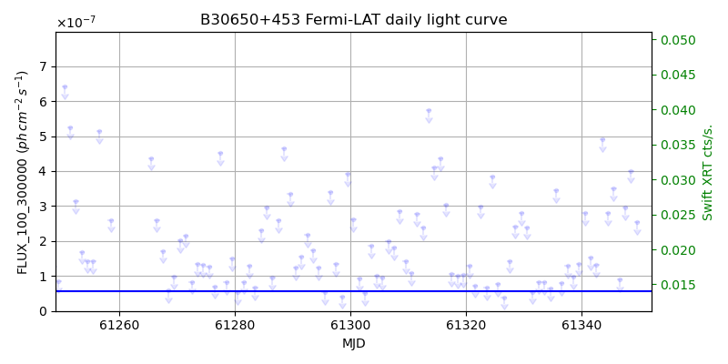
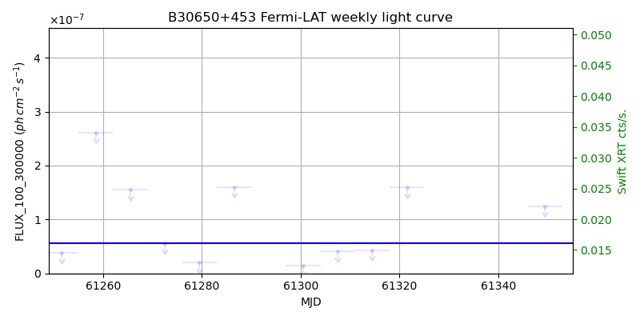
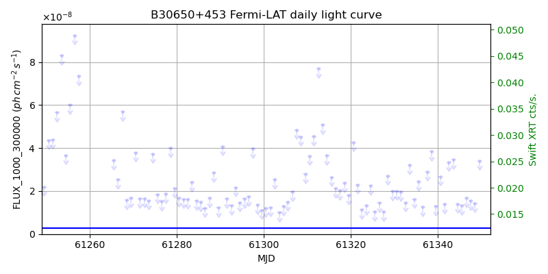
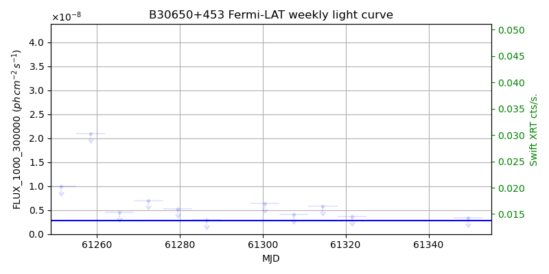

LAT Lightcurve site: https://fermi.gsfc.nasa.gov/ssc/data/access/lat/msl_lc/source/B3_0650p453
Swift site: https://www.swift.psu.edu/monitoring/source.php?source=B30650+453
NED: Query
Time of last update of this page: UT: 2026-11-06 16:17 (MJD: 61350.679)
| Property | Value |
|---|---|
| R.A. | 6:54:23.76 |
| Dec. | 45:14:24.0 |
| z | 0.933 |
| 3FGL SpectrumType | PowerLaw |
| 3FGL PL Index | 2.29 |
| 3FGL Flux_100_300000 | 5.59e-08 1 / (s cm2) |
| 3FGL Flux_1000_300000 | 2.88e-09 1 / (s cm2) |
| 3FGL Flux >200 GeV | 3.14e-12 1 / (s cm2) |
| 3FGL Extrap. Crab >200 GeV | 0.01 |
| 3FGL Flux After EBL Absorption >200GeV | 6.11e-14 1 / (s cm2) |
| 3FGL EBL Crab Fraction >200GeV | 0.00 |

| MJD | dMJD | Flux | dFlux | Frac3FGL | FracCrab>200GeV | EBLFracCrab>200GeV |
|---|---|---|---|---|---|---|
| 61345.50 | 0.50 | 3.50e-07 | 0.00e+00 | 0.00 | 0.00 | 0.00 |
| 61346.50 | 0.50 | 9.02e-08 | 0.00e+00 | 0.00 | 0.00 | 0.00 |
| 61347.50 | 0.50 | 2.96e-07 | 0.00e+00 | 0.00 | 0.00 | 0.00 |
| 61348.50 | 0.50 | 4.01e-07 | 0.00e+00 | 0.00 | 0.00 | 0.00 |
| 61349.50 | 0.50 | 2.53e-07 | 0.00e+00 | 0.00 | 0.00 | 0.00 |

| MJD | dMJD | Flux | dFlux | Frac3FGL | FracCrab>200GeV | EBLFracCrab>200GeV |
|---|---|---|---|---|---|---|
| 61286.50 | 3.50 | 1.60e-07 | 0.00e+00 | 0.00 | 0.00 | 0.00 |
| 61300.50 | 3.50 | 1.37e-08 | 0.00e+00 | 0.00 | 0.00 | 0.00 |
| 61307.50 | 3.50 | 4.05e-08 | 0.00e+00 | 0.00 | 0.00 | 0.00 |
| 61314.50 | 3.50 | 4.29e-08 | 0.00e+00 | 0.00 | 0.00 | 0.00 |
| 61321.50 | 3.50 | 1.59e-07 | 0.00e+00 | 0.00 | 0.00 | 0.00 |

| MJD | dMJD | Flux | dFlux | Frac3FGL | FracCrab>200GeV | EBLFracCrab>200GeV |
|---|---|---|---|---|---|---|
| 61345.50 | 0.50 | 1.32e-08 | 0.00e+00 | 0.00 | 0.00 | 0.00 |
| 61346.50 | 0.50 | 1.68e-08 | 0.00e+00 | 0.00 | 0.00 | 0.00 |
| 61347.50 | 0.50 | 1.55e-08 | 0.00e+00 | 0.00 | 0.00 | 0.00 |
| 61348.50 | 0.50 | 1.43e-08 | 0.00e+00 | 0.00 | 0.00 | 0.00 |
| 61349.50 | 0.50 | 3.41e-08 | 0.00e+00 | 0.00 | 0.00 | 0.00 |

| MJD | dMJD | Flux | dFlux | Frac3FGL | FracCrab>200GeV | EBLFracCrab>200GeV |
|---|---|---|---|---|---|---|
| 61286.50 | 3.50 | 2.96e-09 | 0.00e+00 | 0.00 | 0.00 | 0.00 |
| 61300.50 | 3.50 | 6.33e-09 | 0.00e+00 | 0.00 | 0.00 | 0.00 |
| 61307.50 | 3.50 | 4.08e-09 | 0.00e+00 | 0.00 | 0.00 | 0.00 |
| 61314.50 | 3.50 | 5.80e-09 | 0.00e+00 | 0.00 | 0.00 | 0.00 |
| 61321.50 | 3.50 | 3.61e-09 | 0.00e+00 | 0.00 | 0.00 | 0.00 |
--------------------------------------------------------- Using user-supplied coords: 6:54:23.76 45:14:24.0 2000 --------------------------------------------------------- FLWO UT night of: 2026-11-07 Local Sid. @ Midnight: 02:42 Sunset (-15.0) (local, UT): 18:39 01:39 Sunrise (-15.0) (local, UT): 05:36 12:36 Moonrise (local, UT): 05:16 12:16 Moonset (local, UT): Moon phase: 0.04 --------------------------------------------------------- AzTime LSID UT Obj_el Obj_az Mn_el Mn_az Sep. --------------------------------------------------------- 18:39 21:20 01:39 -6.4 24.6 -35.5 278.9 98.9 19:09 21:50 02:09 -2.2 29.1 -41.6 283.5 99.2 19:39 22:20 02:39 0.2 33.2 -47.5 288.8 99.4 20:09 22:50 03:09 3.6 37.0 -53.3 295.3 99.7 20:39 23:20 03:39 7.5 40.5 -58.7 303.4 100.0 21:09 23:50 04:09 11.8 43.6 -63.5 313.9 100.4 21:39 00:20 04:39 16.3 46.5 -67.5 328.0 100.7 22:09 00:50 05:09 21.0 49.0 -70.0 346.2 101.0 22:39 01:20 05:39 25.9 51.1 -70.5 6.9 101.3 23:09 01:51 06:09 31.0 53.0 -68.8 26.6 101.6 23:39 02:21 06:39 36.1 54.4 -65.4 42.5 102.0 00:09 02:51 07:09 41.4 55.4 -60.9 54.4 102.3 00:39 03:21 07:39 46.6 55.9 -55.8 63.5 102.6 01:09 03:51 08:09 51.9 55.6 -50.2 70.6 102.9 01:39 04:21 08:39 57.2 54.4 -44.4 76.4 103.2 02:09 04:51 09:09 62.3 51.8 -38.4 81.4 103.5 02:39 05:21 09:39 67.2 46.9 -32.4 85.8 103.8 03:09 05:51 10:09 71.5 38.3 -26.3 89.9 104.1 03:39 06:21 10:39 74.9 24.0 -20.2 93.7 104.4 04:09 06:51 11:09 76.4 3.4 -14.2 97.5 104.7 04:39 07:21 11:39 75.6 341.7 -8.1 101.2 105.0 05:09 07:52 12:09 72.7 325.3 -1.2 105.0 105.2 05:36 08:19 12:36 69.0 315.9 3.4 108.6 105.5 --------------------------------------------------------- Dark hours >55 deg.: 3.82 srcstart (UT): 2026-11-07 08:26 srcend (UT): 2026-11-07 12:15